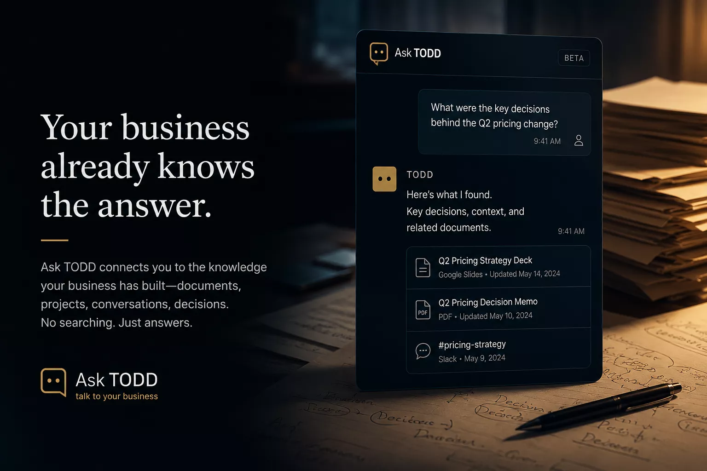

If your business only works when one person remembers where everything is, you don’t have a knowledge problem. You have an access problem. Ask TODD helps everyone reach the right context through conversation.

Free to use. Built because people kept needing a more practical way to interact with internal knowledge, not just store it.
Teams lose momentum when useful knowledge is technically present but practically inaccessible. Ask TODD reduces the distance between question and usable context.
Taliferro thinks knowledge systems should support action, not just storage. If people cannot get to the context when they need it, the system is still broken.
Help users reach the right information without reconstructing everything manually.
Make knowledge usable in the flow of work, not only in a repository.
Show how Taliferro turns knowledge management into something operationally useful.